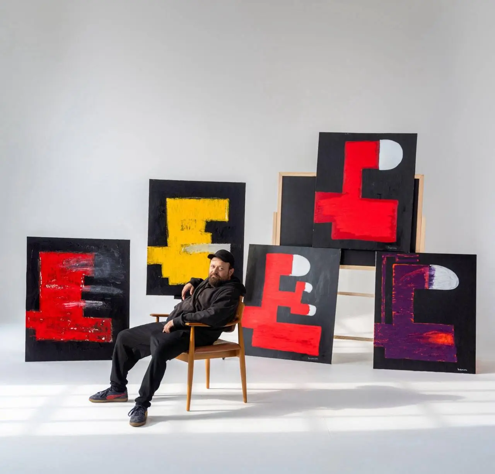

❮
❯

Paul Sergounine (b. 1984, Moscow) is a contemporary painter based in Tbilisi, Georgia.
He spent his early childhood in Moscow before relocating to Düsseldorf, Germany, where he attended the International School of Düsseldorf. Sergounine later studied at Webster University in Leiden and Vienna. After living and working internationally for many years, he established his studio in Tbilisi in 2021.
Sergounine works primarily with oil pastel applied over acrylic ground, constructing dense vertical structures through repetition, compression, and interruption. Each painting develops under strict internal constraints — limited palette, fixed scale, and predetermined structural rules.
His current body of work, Totems (2025– ) consists of vertically organized compositions that function as engineered visual structures rather than figurative symbols. Built through cycles of accumulation and destabilization, the paintings examine how much pressure a form can absorb before it collapses.
I do not paint to decorate, to illustrate, or to comfort. I construct systems and force them to endure pressure.
Each work begins under constraint — limited palette, fixed scale, strict internal rules. I build structure deliberately, then destabilize it. Compression, repetition, interruption. I push until form resists, fractures, or survives.
The image is not the goal. It is the residue of stress.
I work in closed cycles. Within every cycle, one completed painting is destroyed. Another is permanently removed from circulation during my lifetime. Elimination is structural, not symbolic. Removal prevents resolution. Nothing is allowed to settle into completion.
The Totems are not figures. They are engineered vertical structures subjected to endurance. They hold accumulated force without collapsing.
What remains is not expression. It is proof of survival.
Only what withstands pressure is permitted to exist.